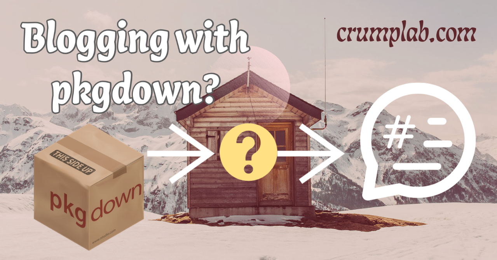

Blogging with pkgdown?
Rstats
pkgdown
blogging
An attempt to blog with pkgdown, including notes to self about how I did this. It was succesful enough that I’m using pkgdown for this blog.
Last knit: 2026-09-29
NOTE: I stopped using pkgdown for bloggin and switched to quarto, which is much better suited to the task.
I like pkgdown. It’s great for what it was built to do (make websites for R packages), and it’s pretty good at other use cases as well. For example, I recently re-factored my lab webpage using pkgdown and that worked out well enough.
My previous website had a hacked together blog using demented combinations of R markdown templates. I was thinking about adopting some other blogging scheme like distill, but couldn’t get it to play nice with pkgdown. So, this is an attempt to blog in pkgdown and see how far that goes for me.
Blogging features I’m looking for
Here’s of list of features I think I want for blogging. Making this list should help me figure out whether or not I can implement them in pkgdown.
- Have an index page that lists all of the blog posts, and that is auto-magically generated from the blog posts
- Have a “make_post()” type of function that makes a template for a new post all ready to go, and saved in the folder where it needs to be.
- Have the posts be searchable in pkgdown
- Have the posts use the same site-wide navigation as the rest of the site.
Implementing the blog in pkgdown
I think I can do most of what I want with pkgdown vignettes. One minor detail is that I’m not sure how easy it will be to customize the index page listing all of the blog posts. It would be nice to have a picture for each blog post, but that might not be an option without some meddling. Oh well. I’ll use the rest of this post to leave breadcrumbs for my future self on a blogging workflow.
Make a blog folder in vignettes
Pkgdown automatically renders .Rmd files in the vignettes folder. I already have the main pages of the website in vignettes, so I’ll make a separate folder called vignettes/blog to hold all of the blog posts.
Post workflow
I need to make some decisions here. Should I put individual vignettes in the blog folder, or should I make subdirectories for each post. What are the naming conventions?
This kind of structure might work. But, I need to check how the posts are rendered to the articles page.
vignettes/blog
├── post_4_1_22_older_post
│ └── post_4_1_22_older_post.Rmd
└── post_5_17_22_blogging
└── post_5_17_22_blogging.RmdCompiling the posts using build_articles()
pkgdown::build_articles() will compile all of the .Rmds in the vignettes folder. The blog posts are in there, so they will be compiled to.
The same function also creates an index.html for the knitted vignettes. My plan is to use that page to list only blog posts, and not any other pages I have in the vignettes folder. This can be accomplished through _pkgdown.yml.
For example, the following creates some sections on the index.html, and uses starts_with() to loop through folders that start with post in the blog folder.
articles:
- title: Newer Posts
desc: Trying out blogging with pkgdown.
navbar: ~
contents:
- starts_with("blog/post")
- title: Older Posts
desc: Need to add links to older stuff here...
navbar: ~Ordering posts from newest to oldest
If I adopt the above naming convention post_M_D_Y_title, then posts get listed from oldest to newest on the index page. Need to flip that.
It seems like I would just need to sort the order of posts somehow, but I couldn’t figure that out.
I could use a naming convention with a number that gets smaller for every new post post_number_M_D_Y_title. That’s mildly annoying, but probably what I will do for now. Another option would be to override the _pkgdown.yml while running build_articles(). But this would require writing an alternative yml that lists the contents in a preferred order. That seems like too much work.
Decision was to start at 999, and count down. I probably won’t get to 0, and if I do, well that’s on me.
vignettes/blog
├── post_998_5_17_22_blogging
│ └── post_998_5_17_22_blogging.Rmd
└── post_999_3_1_22_older_post
└── post_999_3_1_22_older_post.Rmdhelper functions
Not sure that I need any helper functions. I was thinking about creating a make_post function in the spirit of usethis:use_vignette(). Maybe I’ll try that later. For now it wouldn’t be too bad to just copy/paste and reword stuff from a previous blog post.
Custom stuff
I have a bunch of older blog pieces. I should consider migrating them over. Before I do that I should at least link to them.
I had fun adding banners to other pages on my lab website, and I would like to add a banner to the articles index.html to spice things up. Not sure yet how to do this…maybe an override with includes before body or something. I tried an override, but the outcome wasn’t pretty.
Next up is to hack the template. Looks like I need to make a template off of content-article-index.html.
- Make
inst/pkgdown/BS5/templates - copy in
content-article-index.htmlfrom pkgdown templates - create a dummy R package for this repo, it’s called crumplab
- list crumplab as package in template yml listing in
_pkgdown.yml - mod
content-article-index.htmland add my images etc.
It worked I think. Note to self that the package needs to be rebuilt in order for any changes to the templates to take effect.
Issues
I want to add unique twitter cards to the articles/index.html page, and to individual posts. I thought this would be easy, because pkgdown makes it easy to add twitter cards for each vignette. However, it seems that any other cards are added on a site-wide basis, and defined in _pkgdown.yml. Additionally, it’s not clear how to set individual cards for pages like articles/index.html.
Solution was to write a custom version of pkgdown::build_article_index() that allowed to the override to be applied only to articles/index.html, and not to any the blog posts. A nice side effect was that I was planning to add some functions to a lab R package, so now I can put those in the R package for the crumplab website.
Extra bits
So far I’m pretty happy with this approach to blogging. But, I’m sure there’s a bunch of things that will come up as I try to process out even more. I’m going to use the space to make breadcrumbs for myself to solve little blogging problems that I stumble across.
Drafting a post without publishing
What are some options for drafting a post and choosing when to publish it.
- Make a new post on my local computer and don’t push it to Github.
- Add to
.Rbuildignore, but this wouldn’t allow a preview? - Or, add new posts to a
blog/draftsfolder. This should build the post, but it won’t be linked to on the blog page. If someone knew the URL it would still be visible on the internet, if pushed to github.